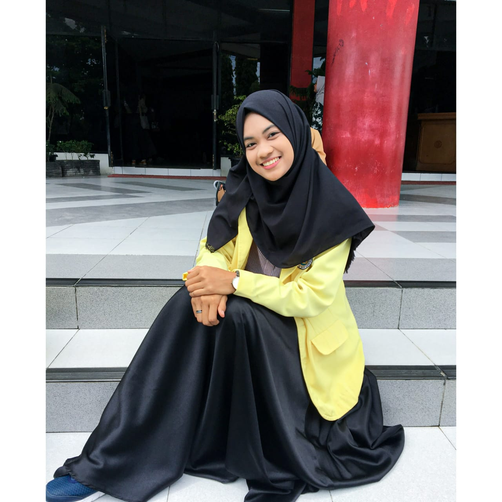

Negara-negara maju mempunyai visi pendidikan untuk membentuk masyarakat berbasis pengetahuan (knowledge based society). Indikator masyarakat berbasis pengetahuan tersebut diantaranya memiliki kemampuan tinggi dalam pemecahan masalah, kreatif, inovatif, beretika, demokratis, menjadi pembelajar mandiri dan pembelajar sepanjang hayat (longlife learner). Visi pendidikan tersebut tentunya juga menjadi acuan bagi Bangsa Indonesia dalam rangka menciptakan masyarakat Indoensia berbasis pengetahuan, terlebih lagi di era 4.0 dan menuju era 5.0.
Paradigma pembelajaran abad 21 adalah konstruktivisme yaitu pembelajaran saintific. Pendekatan pembelajaran yaitu problem based learning, inquiry based learning, discovery based learning, project based learning dan lain-lain. Model pembelajaran saintifik memerlukan data, informasi dan pengetahuan (sumber belajar) yang banyak dan beragam. Disinilah letak peran penting perpustakaan dalam pembelajaran. Perpustakaan tidak berkembang bila pembelajaran hanya melulu dengan metode ceramah (lecture) dan bersifat satu arah (monoton). Model evaluasi/ ulangan/ ujian berbasis recall (hapalan), bukan pemecahan kasus/ masalah (Problem solving). Sumber belajar hanya dibatasi pada buku teks atau diktat guru semata. Ada guru yang mengharuskan jawaban siswa berdasarkan apa yang tertera di buku teks atau diktat yang dibuatnya. Hal semacam ini tentunya menjadi tantangan sendiri bagi pengembangan pendidikan di Indonesia ke depan.
Menurut M. Ihsanuddin, ada 3 (tiga) program perpustakaan sekolah yang berkontribusi langsung pada prestasi belajar :
1. Pengadaan koleksi secara besar-besaran : "Pengadaan koleksi secara besar-besaran"
2. Program literasi informasi : "Buat silabus dan RPP"
3. Program membaca membaca di sekolah : "Tetapkan kewajiban membaca selama 15 menit sebelum pelajaran dimulai setiap harinya"
Revitalisasi Program Perpustakaan Sekolah :
1. Munazharah (wacana kritis) : "Buatlah suasana di perpustakaan yang mendorong siswa senang mengkaji persoalan-persoalan penting, suka berdiskusi, bertukar pendapat, berbagi pengetahuan. "
2. Mulaahazhah (melakukan research/penelitian) : "Buatlah program agar siswa senang membuat penelitian. Berikan bimbingan literasi informasi agar penelitiannya berkualitas."
3. Muqaaranah (melakukan perbandingan/bench-marking) : "Buatlah program agar siswa senang dengan hal-hal baru. Tujuannya agar ilmu terus berkembang dan siswa selalu memperoleh informasi atau pengetahuan terbaru atau terbaik."
Tidak ada yang menyangka bahwa pandemi Covid-19 yang muncul di akhir tahun 2019–yang melumpuhkan roda kehidupan seluruh pelosok negeri dengan tanpa ampun–belum juga mencapai kata usai. Tidak kita dengar pula ada dari para ahli ternama atau pemerintah negara maju dan kaya sekalipun yang saat ini berani memberikan jaminan bahwa virus ini ini juga akan segera hilang di akhir tahun 2020. Bahkan, katanya, mungkin virus ini akan selamanya menghantui kehidupan manusia. Seperti itu orang-orang menggambarkan betapa dahsyatnya virus ini, yang juga tidak bisa kita pungkiri bahwa di daerah kita saat ini kasusnya sedang naik tinggi tak terbendung.
Di masa pandemi ini, sudah sama-sama kita rasakan bahwa dampak dari virus Covid-19 ini sungguh nyata adanya, semuanya di ambang titik kritis termasuk dunia pendidikan. Sudah berbulan-bulan lamanya pemerintah terpaksa menutup sekolah-sekolah dan memberlakukan pembelajaran jarak jauh (PJJ) dari rumah. Proses kegiatan belajar mengajar yang sebelumnya dilakukan di kelas secara tatap muka, secara tiba-tiba dihentikan dan harus dilakukan secara daring ataupun luring, yang kita semua tahu itu berjalan dengan tidak mulus dan bahkan menciptakan masalah baru.
Mengutip daring hasil riset Ali (2019), Peran Pustakawan Sekolah di Masa Pandemi :
1. Berperan sebagai fasilitator pendukung guru dan siswa dalam proses pembelajaran jarak jauh : "Pengadaan koleksi secara besar-besaran"
2. Berperan sebagai agen literasi penyedia informasi akurat terkait Covid-19 dan membantu kampanye kesehatan masyarakat sebagai bentuk dukungan bagi program pemerintah terhadap pencegahan penyebarannya"
3. Berperan sebagai inisiator yang memberikan masukan ide-ide program baru bagi bagian kurikulum dan kesiswaan.
Menurut Hartono (2017), Digitalisasi Perpustakaan:
1. Perpustakaan harus sudah segera melakukan perubahan wujud fisiknya ke dalam bentuk nonfisik yang dapat diakses dari mana saja dan kapan saja oleh penggunanya.
2. Pustakawan dapat menjawab tantangan tersebut dengan memainkan peran yang lebih luas dan tanpa batas ruang dan waktu dengan cara memanfaatkan inovasi kecanggihan teknologi komputer dan informasi.
Di tengah terjadinya wabah Covid-19, banyak masyarakat yang diimbau untuk tetap tinggal dan beraktivitas dari rumah. Hal ini juga berdampak pada perpustakaan yang tidak memiliki pengunjung karena tidak beroperasi selama pandemi. Jika terus dibiarkan, maka peran dan fungsi perpustakaan tidak akan berjalan selama pandemi ini masih berlangsung. Untuk itu, perlu dilakukan inovasi yang dapat mewujudkan peran dan fungsi perpustakaan di saat pandemi yang masih berlangsung, agar pengguna perpustakaan tetap mendapatkan informasi yang dibutuhkannya.
Inovasi yang dapat dilakukan oleh perpustakaan adalah dengan menyediakan informasi secara online agar dapat diakses oleh semua orang kapan saja dan di mana saja. Salah satu bentuk inovasi tersebut adalah website online perpustakaan yang dapat memenuhi kebutuhan informasi pengguna perpustakaan kapan saja dan di mana saja, sehingga pengguna tidak perlu datang ke perpustakaan di era pandemi saat ini. Website online perpustakaan dapat menjadi solusi di era pandemi agar perpustakaan tidak kehilangan peran dan fungsi-nya sebagai penyebarluasan dan pemenuhan informasi pengguna. Pengguna yang biasanya mendatangi perpustakaan untuk mencari informasi, kini dapat menemukan informasi dengan mengakses website online perpustakaan melalui perangkat elektronik masing-masing kapan saja dan di mana saja walaupun hanya berada dirumah.
Hal tersebut merupakan suatu dukungan kepada perpustakaan yang selama pandemi tidak beroperasi, sehingga perpustakaan dapat menjalankan peran dan fungsinya dengan baik walaupun secara online. Pengguna yang selama pandemi selalu berkegiatan di rumah, baik itu bekerja ataupun belajar tentu memerlukan update informasi.Informasi yang dibutuhkan dapat terpenuhi jika pengguna mengakses informasi melalui website online perpustakaan. Beragam jenis bidang keilmuan dengan berbagai bentuk informasi, mulai dari buku, jurnal, majalah, video serta karya elektronik lainnya tersedia melalui website online perpustakaan dan dapat diakses secara gratis.
Selain itu, banyak perpustakaan yang melakukan kerjasama dengan perpustakaan lain serta melanggan/membeli bahan pustaka dari luar negeri yang diperuntukkan kebutuhan informasi penggunya-nya. Semua koleksi tersebut dapat diakses dengan cepat dan mudah melalui masing-masing website online perpustakaan. Salah satu contoh website online perpustakaan terbaik di Indonesia adalah milik Perpustakaan Nasional RI yang memiliki ribuan koleksi elektronik yang terdiri dari buku, artikel, majalah, koleksi yang dilanggan serta koleksi yang berasal dari kerja sama Perpustakaan Nasional dengan lembaga lainnya. Untuk dapat mengakses semua koleksi-nya, terlebih dahulu kita harus mendaftar yang dapat dilakukan dan diakses melalui website online perpustakaan http://e-resources.perpusnas.go.id/.
Selain mengakses website online milik Perpustakaan Nasional RI, pengguna juga dapat mengakses website online milik perpustakaan kota serta daerah masing-masing dan website online milik perpustakaan universitas, yang disesuaikan dengan kebutuhan informasi masing-masing. Dengan mengakses website online Perpustakaan Nasional RI serta perpustakaan lainnya yang ada di sekitar kita, hal tersebut menjadi suatu bentuk dukungan agar eksistensi perpustakakaan tetap berjalan dengan sebagaimana peran dan fungsinya.
Hallo para pengunjung FeLibrary
Sebelum mengenal FeLibrary, ada baik nya mengenal pemilik website ini yah :)
Perkenalkan saya Felya Invita Fijas, saya mahasiswi di Universitas Negeri Padang. Saya adalah seorang mahasiswi dengan program studi informasi perpustakaan dan kearsipan.
Nah, program studi saya akan berhubungan dengan konten-konten saya yang akan saya sajikan kepada pengunjung FeLibrary.
Perpustakaan adalah mencakup suatu ruangan, bagian dari gedung / bangunan atau gedung tersendiri yang berisi bukubuku koleksi, yang diatur dan disusun demikian rupa, sehingga mudah untuk dicari dan dipergunakan apabila sewaktu-waktu diperlukan oleh pembaca (Sutarno NS, 2006:11).
Perpustakaan adalah kumpulan atau bangunan fisik sebagai tempat buku dikumpulkan dan disusun menurut sistem tertentu atau keperluan pemakai (Lasa, 2007:12).
Secara lebih konkrit perpustakaan dapat dirumuskan sebagai suatu unit kerja dari sebuah lembaga pendidikan yang berupa tempat penyimpanan koleksi buku-buku pustaka untuk menunjang proses pendidikan. Dari beberapa pengertian diatas, dapat disimpulkan bahwa perpustakaan adalah tempat untuk mengembangkan informasi dan pengetahuan yang dikelola oleh suatu lembaga pendidikan, sekaligus sebagai sarana edukatif untuk membantu memperlancar cakrawala pendidik dan peserta didik dalam kegiatan belajar mengajar.
Sumber :
Muchlisin Riadi. 2012. Pengertian, Jenis dan Tujuan Perpustakaan.
Lasa. 2007. Manajemen Perpustakaan Sekolah. Yogyakarta: Pinus
Sutarno NS. 2006. Perpustakaan dan Masyarakat. Jakarta: Sagung Seto
Sutarno NS (2006:37)
1. Perpustakaan Nasional RI
Merupakan Perpustakaan Nasioal yang berkedudukan di Ibu Kota Negara Indonesia yang mempunyai jangkauan dan ruang lingkup secara Nasional dan merupakan salah satu Lembaga Pemerintah Non Departemen (LPND) yang bertanggung jawab kepada Presiden.
2. Badan Perpustakaan Daerah
Badan perpustakaan daerah atau lembaga lain yang sejenis adalah yang berkedudukan di tiap provinsi di Indonesia yang mengelola perpustakaan.
3. Perpustakaan Umum
Perpustakaan umum diibaratkan sebagai Universitas Rakyat atau Universitas Masyarakat, maksudnya adalah bahwa perpustakaan umum merupakan lembaga pendidikan bagi masyarakat umum.
4. Perpustakaan Perguruan Tinggi
Perpustakaan yang berada di Perguruan Tinggi, baik berbentuk Universitas, Akademi, Sekolah Tinggi, ataupun Institut. Keberadaan, tugas dan fungsi perpustakaan tersebut adalah dalam rangka melaksanakan Tri Dharma Perguruan Tinggi, meliputi pendidikan, penelitian / riset dan pengabdian kepada masyarakat.
5. Perpustakaan Sekolah
Perpustakaan sekolah berada di sekolah, dikelola sekolah, dan berfungsi untuk sarana kegiatan belajar mengajar, penelitian sederhana, menyediakan bahan bacaan, dan tempat rekreasi.
6. Perpustakaan Khusus
Perpustakaan khusus berada pada lembaga-lembaga pemerintahan dan swasta. Perpustakaan tersebut diadakan sebagai sumber informasi dan ilmu pengetahuan yang berkaitan baik langsung maupun tidak langsung dengan instansi induknya.
7. Perpustakaan Lembaga Keagamaan
Merupakan perpustakaan yang dimiliki dan dikelola oleh lembaga-lembaga keagamaan, misalnya perpustakaan, masjid, gereja.
8. Perpustakaan Internasional
Perpustakaan Internasional Merupakan perpustakaan internasional yang memiliki koleksi yang menyangkut negara-negara anggota atau negara-negara yang berafiliasi kepada lembaga dunia tersebut. Perpustakaan ini dikelola dan diselenggarakan lembaga internasional.
9. Perpustakaan Kantor Perwakilan Negara-negara Asing
Merupakan perpustakaan yang dimiliki dan diselenggarakan oleh lembaga / kantor perwakilan Negara masing-masing. Contohnya perpustakaan lembaga kebudayaan amerika dan pusat kebudayaan jepang.
10. Perpustakaan Pribadi / Keluarga
Merupakan perpustakaan yang dimiliki dan dikelola oleh perorangan atau orang-orang tertentu bersama anggota keluarganya.
11. Perpustakaan Digital
Perpustakaan digital bukan merupakan salah satu jenis perpustakaan yang berdiri sendiri, tetapi merupakan pengembangan dalam system pengelolaan dan layanan perpustakaan.
Sumber :
Muchlisin Riadi. 2012. Pengertian, Jenis dan Tujuan Perpustakaan.
Lasa. 2007. Manajemen Perpustakaan Sekolah. Yogyakarta: Pinus
Sutarno NS. 2006. Perpustakaan dan Masyarakat. Jakarta: Sagung Seto
Sutarno NS (2006:34) :
”Tujuan Perpustakaan adalah untuk menyediakan fasilitas dan sumber informasi dan menjadi pusat pembelajaran”.
Menurut Lasa (2007:14):
1. Menumbuhkembangkan minat baca dan tulis. Para siswa dan guru dapat memanfaatkan waktu untuk mendapat informasi di perpustakaan. Kebisaan ini mampu menumbuhkan minat baca mereka yang pada akhirnya dapat menimbulkan minat tulis.
2. Mengenalkan teknologi informasi. Perkembangan teknologi informasi harus terus diikuti pelajar dan pengajar. Untuk itu perlu proses pengenalan dan penerapan teknologi informasi dari perpustakaan.
3. Membiasakan akses informasi secara mandiri. Pelajar perlu didorong dan diarahkan untuk memiliki rasa percaya diri dan mandiri untuk mengakses informasi. Hanya orang yang percaya diri dan mandirilah yang mampu mencapai kemajuan.
4. Memupuk bakat dan minat. Bacaan, tayangan gambar, dan musik di perpustakaan mampu menumbuhkan bakat dan minat seseorang. Fakta dan sejarah membuktikan bahwa keberhasilan seseorang itu tidak ditentukan oleh NEM yang tinggi melainkan melalui pengembangan bakat dan minat.
Sumber :
Muchlisin Riadi. 2012. Pengertian, Jenis dan Tujuan Perpustakaan.
Lasa. 2007. Manajemen Perpustakaan Sekolah. Yogyakarta: Pinus
Sutarno NS. 2006. Perpustakaan dan Masyarakat. Jakarta: Sagung Seto
Peranan perpustakaan adalah untuk memelihara dan meningkatkan efisiensi dan efektivitas proses belajar mengajar. Suatu perpustakaan yang dikelola dengan baik dan sistematis, secara langsung atau tidak langsung dapat memberikan kemudahan bagi proses belajar mengajar pada tempat perustakaan tersebut berada.
Perpustakaan adalah jantungnya dunia pendidikan karena berbagai macam informasi dapat kita peroleh lewat perpustakaan.
Sumber :
Muchlisin Riadi. 2012. Pengertian, Jenis dan Tujuan Perpustakaan.
Lasa. 2007. Manajemen Perpustakaan Sekolah. Yogyakarta: Pinus
Sutarno NS. 2006. Perpustakaan dan Masyarakat. Jakarta: Sagung Seto
Promosi perpustakaan merupakan rangkaian kegiatan perpustakaan yang dirancang agar masyarakat mengetahui manfaat sebuah perpustakaan melalui koleksi, fasilitas, dan produk/ layanan yang disediakan. Promosi perpustakaan pada dasarnya merupakan forum pertukaran informasi antara organisasi dan konsumen dengan tujuan utama memberikan informasi tentang produk atau jasa yang disediakan oleh perpustakaan sekaligus membujuk pemakai untuk bereaksi terhadap produk atau jasa yang ditawarkan. Hasil dari promosi adalah tumbuhnya kesadaran sampai pada tindakan untuk memanfaatkannya.
Tujuan Promosi perpustakaan adalah aktivitas memperkenalkan perpustakaan dari segi fasilitas, koleksi jenis layanan, dan manfaat yang dapat diperoleh oleh setiap pemakai perpustakaan.
Promosi perpustakaan Bertujuan Untuk :
Agar promosi perpustakaan dapat berjalan dengan baik maka diperlukan beberapa unsur yang harus diperhatikan yaitu :
1. Bahan Pustaka merupakan unsur penting artinya koleksi apa saja yang dimiliki oleh perpustakaan sebagai bahan promosi (tercetak, elektronik, web).
2. Jasa ialah layanan yang diberikan oleh perpustakaan.
3. Petugas adalah pengelola perpustakaan yang tahu persis tentang kondisi perpustakaan serta sebagai pelaksana dalam pembuatan sarana promosi.
4. Pengunjung yang dikenal dengan pengguna perpustakaan merupakan orang yang memanfaatkan perpustakaan, sebagai sasaran dari promosi.
5. Media merupanakan saluran atau alat yang digunakan sebagai sarana menyampaikan promosi.
6. Sarana/Prasarana merupakan peralatan yang tersedia dalam pelayanan perpustakaan.
Ada beberapa metode dalam mempromosikan perpustakaan yaitu berupa:
1. Nama dan logo
2. Poster dan leaflet
3. Pameran
4. Media dan video
5. Ceramah
6. Iklan
7. News-letter
8. Pembatas Buku (bookmark)
9. Terbitan Khusus Perpustakaan
10. Seminar
11. Melakukan kegiatan
12. Penyebaran Brosur
Menjalin komunikasi dengan pemustaka, memanfaatkan ilmukomunikasi dalam segala bentuk kegiatan promosi, oleh karena itu diperlukan pengetahuan dalam berkomunikasi dengan pemustaka, lingkungan, fasilitas dan bahan pustaka yang ada. Beberapa sikap dalam berkomunikasi dapat ditunjukkan dengankemampuan memiliki wawasan yang luas, tingginya integritas dan kemampuan dalam berkomunikasi.
Membangun kerjasama dengan pihak ketiga. Sebenarnya tidak satupun perpustakaan yang mampu memberikan layanan optimal dalam memenuhi kebutuhan pemustaka, jadi perlu kerjasama terutama dalam layanan promosi. Kerjasama dapat dilakukan dalam kegiatan sehari-hari atau secara insidentil. Kerjasama dapat dilakukan dengan : instansi terkait (pendidikan, perpustakaan nasional/provinsi/kabupaten/kota, pemerintah, penerbit, toko buku) atau dengan lembaga/orang yang berkompeten dengan perpustakaan (LSM, tokoh masyarakat). Membuat program promosi yang meliputi : penetapan sasaran/prioritas; menentukan prosedur/tindakan serta menyusun rencana kerja. Adapun dalam pembuatan program promosi ini perlu menetapkan pendekatan yang dipakai yaitu : melalui iklan, melalui kontak pribadi atau melalui penciptaan “suasana” (atmosphere), melalui publikasi atau pemberian reward.
Ada banyak blog khusus bertemakan kepustakawanan milik dari para pustakawan yang ada di Indonesia (diluar dosen). Tapi, dari semua itu, pada umunya ada tiga kondisi blog yang ada. Pertama, mati suri alias sama sekali tidak ada kabarnya. Layaknya seperti blog tak bertuan. Entah karena lupa username paswordnya atau memang karena sudah tidak berminat lagi untuk menulis diblog. Kedua, blognya hidup dan ada rentang waktu ketika mengupdate kontennya kendati hanya sebulan atau bahkan dua bulan sekali. Ketiga, blognya hidup, bahkan hingga setiap hari bisa memperbaharui kontenya. Dari ketiga kondisi blog tersebut, barangkali kondisi kedua dan ketiga inilah yang perlu kita kunjungi blognya karena disana akan banyak informasi terbaru, ide bahkan pengetahuan yang bermanfaat untuk para pustakawan. Sementara ini hingga 10 Maret 2017, saya menemukan beberapa blog milik pustakawan yang aktif. Siapa saja? Yuk kita lihat satu-persatu. Insya Allah kedepannya sembari terus menjelajah blog lainya, akan saya update blog-blog milik pustakawan yang aktif menulis seputar dunia kepustakawanan. Bila ada waktu, saya juga akan mencoba mewawancarai mereka para pustakawan yang memiliki blog khususnya tentang seberapa penting media blog digunakan untuk mendukung pekerjaanya.
Grenengane Pustakawan. Demikian Kang Pur menamakan blognya. Siapa yang tidak tahu dengan Kang Pur di dunia kepustakawanan ini. Kang Pur adalah pustakawan aktif yang sekaligus sebagai Pengembang SLiMS dan Mendeley Advisor. Jika teman-teman yang bertandang ke Perpustakaan Teknik UGM, disanalah Kang Pur beraktivitas. Banyak program-program andalannya yang bisa membantu para mahasiswa dan dosen ketika mengerjakan tugas akhir. Diblognya, teman-teman pustakawan bisa menemukan banyak informasi tentang kepustakawanan misalnya seputar jurnal, pengelolaan data riset, informasi sumber ilmiah, dan tentu saja tentang pandangan atau opini serta unek-uneknya di dunia kepustakawanan. Silahkan teman-teman pustakawan kunjungi blognya di purwo.co
Namanya Luckty Giyan Sukarno. Pustakawan sekolah yang satu ini juga mempunyai blog aktif khususnya seputar review buku. Bahkan blognya juga pernah menjuarai dalam lomba blogger yang diadakan Perpustakaan Unsyiah. Penasaran ingin mengunjunginya? Silahkan akses luckty.wordpress.com
Blog Pustakawan Jogja milik dari Teguh Prasetyo Utomo. Alumni dari D3 Ilmu Perpustakaan UIN Sunan Kalijaga Yogyakarta dan saat ini sebagai pustakawan di SMP IT Abu Bakar Yogyakarta. Di blognya teman-teman bisa menemukan berita khusus kepustakawanan misalnya seputar lowongan, kegiatan seputar dunia literasi, minat baca, lomba-lomba dan masih banyak lainya. Silahkan teman-teman berkunjung di pustakawanjogja.blogspot.co.id
Kalau yang ini, teman-teman pustakawan tentu tahu siapa itu Moh.Mursyid. Ia adalah seorang pustakawan yang aktif menulis baik dimedia massa, paper maupun buku. Kang Mursyid ini pendiri KMP (Kelas Menulis Pustakawan). Ia banyak mengajak para pustakawan untuk menulis bersama yang diterbitkan menjadi sebuah buku. Walaupun dalam setahun di blognya hanya ada beberapa tulisan, namun teman-teman bisa melihat diblog tersebut beberapa contoh tulisannya yang dpernah dimuat di media massa. Silahkan kunjungi blognya di semakna.blogspot.co.id. Semoga Kang Mursyid mau mengupdate blog ini dengan tulisan-tulisannya tentang dunia kepustakawanan.
Blog pustakawan selanjutnya yang bisa teman-teman kunjungi adalah blog milik Ula. Konon, Ula itu nama panggilannya. Kalau nama aslinya Dicki Agus Nugroho. Saya lihat blognya memang aktif dan berisi banyak informasi dan pengetahuan tentang dunia kepustakawanan. Bahkan, ada juga tulisan makalah dari Om Ula ini di publish di blognya loh. Om Ula ini sarjana lulusan ilmu perpustakaan dari Universitas Dipenegoro. Saat ini, ia bekerja sebagai pustakawan di Universitas Tidar.
Namanya Wahid Nashihuddin, alumni Ilmu Perpustakaan dan Informasi dari UIN Sunan Kalijaga Yogyakarta. Ia seorang pustakawan dari Pusat Dokumentasi dan Informasi Ilmiah-LIPI. Saya mengenal pustakawan LIPI ini ketika mengikuti Lokakarya Nasional 2016 PDII LIPI. Saat akan pulang dari acara tersebut, saya sempat mengobrol sedikit seputar dunia kepustakawanan. Om Wahid ini aktif menulis tentang dunia kepustakawanan baik sendiri maupun berkolaborasi. Tulisannya banyak diterbitkan seperti di Jurnal Dokumentasi dan Informasi, Jurnal Pustakawan Indonesia, Visi Pustaka, dan jurnal-jurnal kepustakawanan lainya. Tahun 2016 ini, ternyata saya juga pernah menulis bersama dalam buku yang berjudul "Pustakawan dan Pemaknaan Buku" (book chapter). Bagi teman-teman pustakawan silahkan kunjungi blognya om Wahid di pustakapusdokinfo.wordpress.com. Di blognya banyak tulisan-tulisan tentang kepustakawanan dari mulai artikel populer hingga tulisan yang lebih serius berupa hasil penelitiannya. Daftar lengkap karya tulis ilmiahnya bisa dibaca di CV nya yang tersedia di blognya.
Sumber : Murad Maulana. 2016. Blog Para Pustakawan Yang Perlu Anda Kunjungi
Duis aute irure dolor in reprehenderit in voluptate
Sed ut perspiciatis unde omnis iste natus error sit voluptatem accusantium doloremque laudantium, totam rem aperiam, eaque ipsa quae ab illo inventore veritatis et quasi architecto beatae vitae dicta sunt explicabo. Nemo enim ipsam voluptatem quia voluptas sit aspernatur aut odit aut fugit, sed quia consequuntur magni dolores eos qui ratione voluptatem sequi nesciunt.

Sed ut perspiciatis unde omnis iste natus error sit voluptatem accusantium doloremque laudantium, totam rem aperiam, eaque ipsa quae ab illo inventore veritatis et quasi architecto beatae vitae dicta sunt explicabo. Nemo enim ipsam voluptatem quia voluptas sit aspernatur aut odit aut fugit, sed quia consequuntur magni dolores eos qui ratione voluptatem sequi nesciunt.

Sed ut perspiciatis unde omnis iste natus error sit voluptatem accusantium doloremque laudantium, totam rem aperiam, eaque ipsa quae ab illo inventore veritatis et quasi architecto beatae vitae dicta sunt explicabo. Nemo enim ipsam voluptatem quia voluptas sit aspernatur aut odit aut fugit, sed quia consequuntur magni dolores eos qui ratione voluptatem sequi nesciunt.

Sed ut perspiciatis unde omnis iste natus error sit voluptatem accusantium doloremque laudantium, totam rem aperiam, eaque ipsa quae ab illo inventore veritatis et quasi architecto beatae vitae dicta sunt explicabo. Nemo enim ipsam voluptatem quia voluptas sit aspernatur aut odit aut fugit, sed quia consequuntur magni dolores eos qui ratione voluptatem sequi nesciunt.